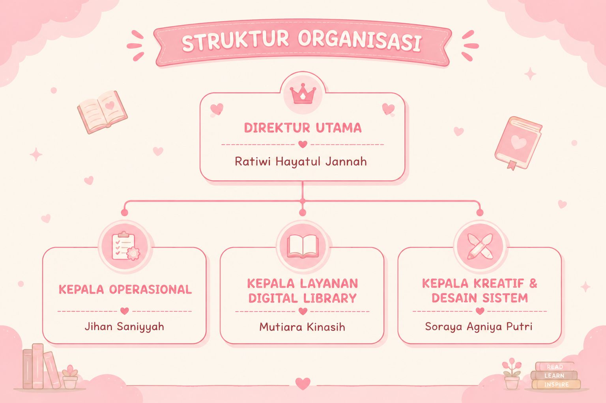
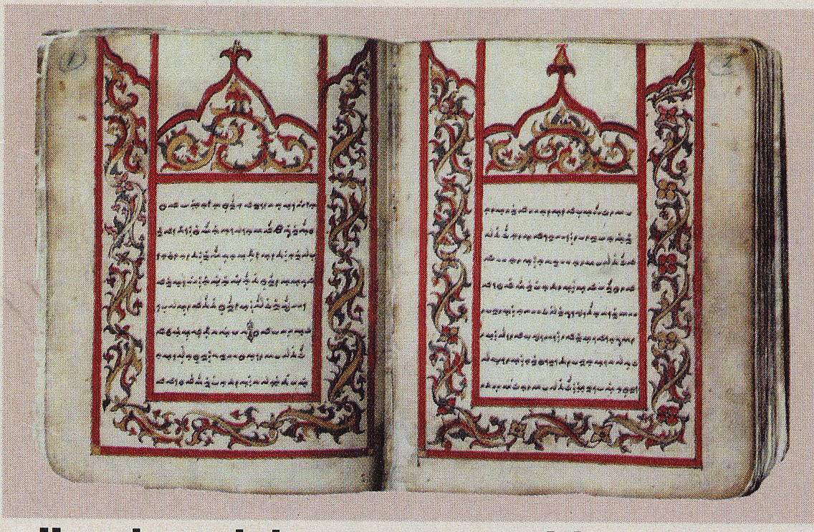
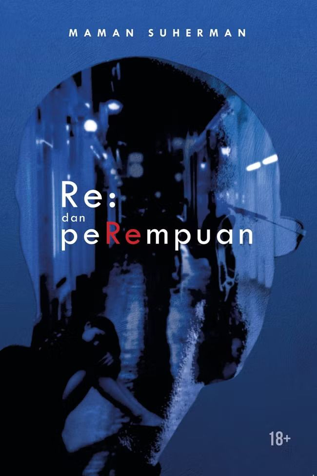

📢 Berita & Pengumuman Utama
Litera Space meluncurkan 3.000 koleksi e-book eksklusif baru bidang Ilmu Informasi minggu ini.
💡 Kegiatan Terdekat
Jangan lewatkan Virtual Bedah Buku bersama jajaran dosen TI pada tanggal 20 Mei 2026 mendatang!
👥 Profil Litera Space
📜 Sejarah Berdirinya
Litera Space didirikan oleh sekelompok mahasiswa dengan visi mulia: Menciptakan wadah literasi yang inklusif, modern, dan tanpa batas ruang dan waktu.
Menjadi perpustakaan digital inovatif yang menghadirkan akses pengetahuan tanpa batas, serta menjadi ruang literasi modern yang mendukung pembelajaran dan kreativitas.
1. Menyediakan koleksi digital berkualitas.
2. Menghadirkan pengalaman membaca yang nyaman dan modern.
3. Mendukung literasi digital melalui layanan inovatif.
4. Mendorong eksplorasi pengetahuan dan kreativitas.
👔 Struktur Organisasi

🔍 Katalog Online Cerdas (OPAC)
Cari koleksi fisik maupun digital perpustakaan secara cepat:
✨ Layanan Unggulan Masa Kini
🤖 Lia AI Assistant
Lia AI: Hai Readers! 🌸 Mau rekomendasi buku atau butuh bantuan riset tugas akhir di Litera Space hari ini?
👥 Co-Reading Space
Ruang membaca bersama dan diskusi kelompok aktif.
📖 Buku Aktif Kelompok
Penulis: Ahmad Tohari
💬 Diskusi Pemustaka
Andi: Konflik batin Srintil di Bab 2 dapet banget sih emosinya.
Siti: Iya! Penggambaran Dukuh Paruk-nya detail banget.
🔄 Layanan Sirkulasi Mandiri
📝 Isi Data Peminjaman
📊 Riwayat Transaksi
Belum ada transaksi sirkulasi hari ini.
📚 Repositori & Koleksi Litera Space
Jelajahi berbagai format pustaka. Buku berlabel 🟢 Bisa Dibaca tersedia teks penuh. Buku berlabel 🟡 Ringkasan ditampilkan sinopsis dan rangkuman per bab.
Koleksi Buku Fisik (Teks)

Laut Bercerita
Leila S. Chudori
🟢 Tersedia di Rak S-1

Rumah Untuk Alie
Lenn Liu
🟢 Tersedia di Rak S-4

Manajemen Sumber Informasi dan Perpustakaan
Drs. Hartono, S.S., M.Hum.
🟢 Tersedia di Rak S-3
Koleksi Digital (Audio & Video)
Video Tutorial Olah Arsip Aktif
Biro Umum ATR/BPN
🟢 Streaming Tersedia

Manuskrip Sureq Galigo
Colliq Pujie (abad ke-19)
🟢 Domain Publik
Koleksi Buku Elektronik (E-Book)
ℹ️ Catatan: Buku-buku berhak cipta ditampilkan sinopsis lengkap + panduan bab. Untuk membaca teks penuh, gunakan layanan resmi seperti iPusnas, Google Play Books, atau Gramedia Digital.

Re: dan perempuan
Maman Suherman
🟡 Sinopsis Lengkap

Ronggeng Dukuh Paruk
Ahmad Tohari
🟡 Sinopsis Lengkap

As Long As the Lemon Trees Grow
Zoulfa Katouh
🟡 Sinopsis Lengkap
Jurnal Ilmiah Berkala

Identitas Nasional ditinjau dari UUD 1945 dan UU No. 24 Tahun 2009
Tatu Afifah — Ajudikasi: Jurnal Ilmu Hukum
🟢 Open Access
Repositori Skripsi & Tugas Akhir

Analisa Manual Handling dengan Metode REBA di PT Arnott's Indonesia
Eko Sarwiyadi — Fakultas Teknik Industri
🟢 Repositori Terbuka
❓ Panduan Lengkap & FAQ
💡 Cara Memakai Sistem OPAC
Selamat datang di OPAC LiteraSpace! Temukan buku favoritmu dengan mudah:
1. Cari Buku Kesayanganmu 🔍
Ketik judul buku, nama penulis, subjek, atau kata kunci pada kolom pencarian.
2. Gunakan Filter Pencarian 🎀
Persempit hasil berdasarkan kategori, tahun terbit, penulis, atau ketersediaan buku.
3. Klik Detail Buku 📖
Lihat informasi lengkap: judul, penulis, tahun terbit, lokasi rak, status ketersediaan.
4. Reservasi Buku ✨
Klik tombol "Pinjam Sekarang" atau "Reservasi".
5. Cek Status Peminjaman 💌
Pantau status pinjaman dan tanggal jatuh tempo melalui akun pribadimu.
📌 Syarat Pinjam Koleksi
🌷 Akun LiteraSpace aktif wajib dimiliki
🌷 Login dahulu sebelum meminjam
🌷 Maksimal 3 buku sekaligus
💗 Masa peminjaman 7 hari, bisa diperpanjang 1 kali
🎀 Keterlambatan → pembatasan akun sementara
❓ Apa itu Fitur L.Charity?
L.Charity adalah layanan sosial di mana akumulasi halaman digital yang kamu selesaikan dihitung untuk mendonasikan buku fisik ke sekolah terpencil.
📅 Agenda & Pengumuman
✅ BERHASIL TERLAKSANA
Workshop Penulisan Jurnal Ilmiah (10 Mei 2026): Sukses diikuti 500+ peserta. Materi PDF tersedia di menu Koleksi.
Litera Space Festival 2026 (1–3 Mei 2026): Dihadiri 1.200+ peserta. Pemenang Lomba Resensi Buku Nasional telah diumumkan.
L.Charity: 200 Buku Terdonasikan ke Sekolah Pelosok.
📅 AGENDA MENDATANG
Bedah Buku "Ronggeng Dukuh Paruk": Diskusi makna sosial dan sejarah bersama civitas akademika.
Workshop Menulis Karya Ilmiah: Teknik sitasi APA/MLA untuk skripsi dan jurnal.
Pelatihan Literasi Digital: Cara membedakan berita hoaks vs sumber terpercaya.
Kontak Kami
Hubungi Pustakawan
Kami siap membantu kendala akses, pertanyaan sirkulasi, atau bantuan referensi.
📍 Alamat: XC3H+CH8, Jl. Bukit Sari Raya, Sumurboto, Banyumanik, Semarang
📞 Telepon: 086788999123
✉️ Email: pustakawan@literaspace.id
🕐 Jam Layanan: Senin–Kamis & Minggu (24 jam)